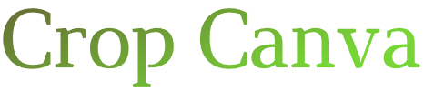
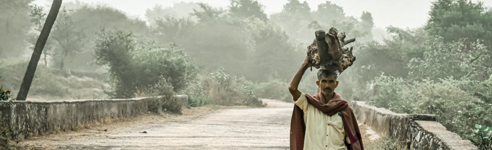

Classic Notebook
The perfect everyday companion.
Sustainable notebooks made from agricultural waste.
Shop Now Learn More Crop Canva is more than just a notebook company; it's a movement driven by a passion for both creativity and environmental responsibility. We believe artistic expression shouldn't come at the expense of our planet. That's why we craft beautiful, high-quality notebooks from a surprising source: agricultural waste like stubble and crop residues. This innovative approach diverts tons of byproducts from landfills, minimizing waste and reducing reliance on virgin wood pulp, a major contributor to deforestation. Our sustainable materials are carefully processed, resulting in durable and eco-friendly paper that forms the canvas for your ideas. Crop Canva notebooks come in a variety of sizes, styles, and textures to inspire creativity for every artistic need. But our commitment to sustainability goes beyond notebooks. We're constantly exploring ways to incorporate agricultural waste into other everyday essentials. By choosing Crop Canva, you're not just getting a beautiful writing companion; you're making a conscious decision for the planet. With every notebook sold, we plant a tree, further contributing to a greener future. Join us in cultivating creativity and a more sustainable world, one page at a time.
The perfect everyday companion.
Keep your thoughts organized.
Unleash your creativity.
Agricultural waste contributes significantly to landfills. We give these leftovers a second life. By using recycled materials, we reduce our impact and promote responsible production.
Feeling the urge to create but worried about your impact? Crop Canva offers a solution! We craft stunning notebooks from recycled agricultural waste, diverting tons of landfill-bound materials. But that's not all! Our eco-friendly notebooks boast top-notch paper quality, inspiring a world of artistic expression. Plus, with every purchase, we plant a tree! Choose Crop Canva - unleash creativity, embrace sustainability, one page at a time. Visit us to discover your perfect sustainable writing companion!
Read the BlogHave questions or feedback? We'd love to hear from you!